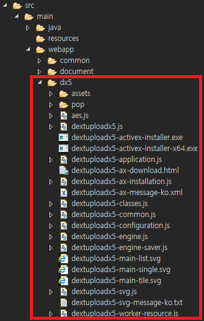
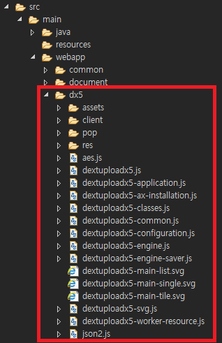

제품 구성
DEXTUploadX5 제품은 덱스트솔루션 사이트(http://www.dextsolution.com)에서 zip 파일로 배포되고 있습니다.
제품은 dextuploadx5-{version}.zip 형식의 이름으로 배포되며, 파일 및 디렉터리(폴더)가 압축되어 있습니다.
- dx5 디렉터리(폴더)에는 DEXTUploadX5 제품을 사용하여 서비스하는데에 필요로 하는 모든 리소스가 포함되어 있습니다.
- manual 디렉터리(폴더)에는 HTML 기반 제품 매뉴얼이 있습니다. (DOC(X), CHM, PDF와 같은 형식은 제공되지 않습니다.)
- samples 디렉터리(폴더)에는 DEXTUploadX5 제품의 기능을 살펴볼 수 있는 예제가 포함되어 있습니다.
- eula.txt 파일은 제품 사용 약관 내용을 담고 있습니다.
DEXTUploadX5 제품은 클라이언트 파일 업로드 제품입니다.
제품은 서버(Server)에 설치하는 과정이 존재하지 않으며, 사용자가 브라우저를 통하여 HTTP 프로토콜(http/https)로 접근할 수 있는 위치에 리소스만 존재하면 됩니다.
압축을 풀었을 때 생성되는 dx5 디렉터리는 제품에 필요한 필수 리소스들이 포함되어 있습니다. 그러므로 이 디렉터리를 바로 웹서버에 복사하거나, 소스 상에서 web root 하위로 복사하여 실행(테스트/운영) 시점에 브라우저로 접근이 가능하도록 설정만 해주면 됩니다.
웹서버와 WAS를 구분지어 사용하는 환경이라면, 도메인이 같을 때, WAS가 아닌 웹서버에 위치하더라도 상관없습니다.
(1.4.1.0 버전 이전 구조)

(1.4.1.0 버전 이후 구조)

DEXTUploadX5는 멀티 모듈과 IE 모듈을 가지고 있으며, 두 가지로 나누어 운영이 가능합니다.
IE 모듈은 Internet Explorer에서만 동작하도록 만들어진 컴포넌트이며 ActiveX 기술을 사용합니다.
그러므로 IE 모듈은 사용자 PC에서 최초 한 번은 클라이언트 설치 프로그램을 다운로드 받아 사용자가 직접 수동 설치를 해야 할 필요가 있습니다.
클라이언트 설치 프로그램(dextuploadx5-activex-installer.exe)이란, DEXTUploadX5 제품에서 IE 모듈로 서비스를 하는 경우, 사용자 PC에 컴포넌트를 설치하는 것을 지원하는 프로그램입니다.
앞서 설명했듯이 DEXTUploadX5 제품을 사용하기 위해서 서버에 제품을 설치하는 과정은 없습니다. 클라이언트 설치와 혼동하지 마시길 바랍니다.